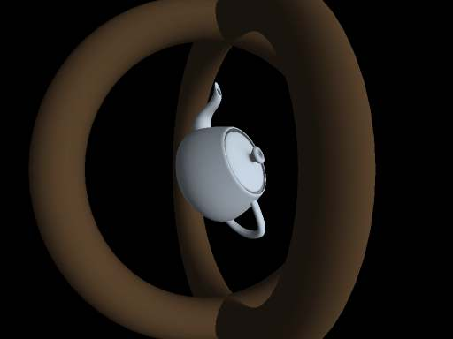

DirectX in IronPython

I've always preferred the open standards and cross-platform philosophy of OpenGL over DirectX. In recent years though, development of OpenGL has seemed to stall somewhat, while DirectX has continually put out new iterations that seem to significantly enhance functionality while improving useability. We use a lot of IronPython at Resolver, the dotNET dialect of Python, so the last couple of nights I thought I'd throw my principles and good taste to the wind, and work through the IronPython samples to see how well it works with the .Net interface of DirectX. The verdict: It works just fine. Albeit with colossal dependancies, for something that simply thows a dozen vertices around the screen. And only on one operating system. Gah.
Comments
Comments powered by Disqus